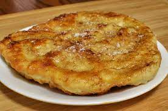

Bannock

Traditional Bannock that the whole family will love!
Bannock is a variety of flat quick bread or any large, round article
baked or cooked from grain. A bannock is usually cut into sections before
serving.
149 calories; protein 3.3g; carbohydrates 24.5g; fat 4.1g;
cholesterol 10.2mg; sodium 465.5mg.
Ingredients
- 3 cups all-purpose flour
- 2 tablespoons baking powder
- 1 teaspoon salt
- 1.5 cups water
- 0.25 cup butter, melted
Steps
- Stir together flour, baking powder, and salt in a large bowl.
Pour water and melted butter over flour mixture. Stir with a fork to
make a ball.
- Turn dough out onto a lightly floured surface; knead gently about 10
times. Pat into a flat circle, 3/4- to 1-inch thick.
- Warm a greased frying pan over medium heat.
- Place dough in the hot pan and cook until browned, about 15 minutes per side.
Use two lifters for easy turning.